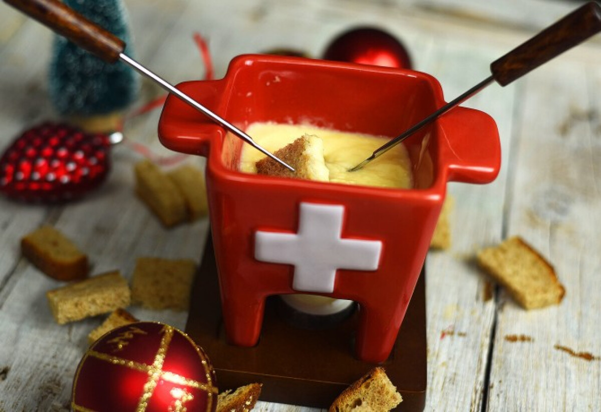
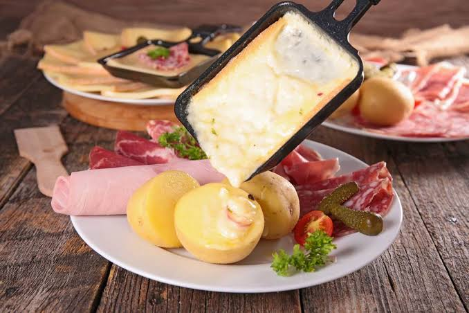
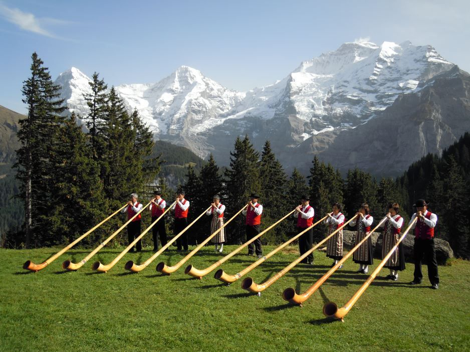
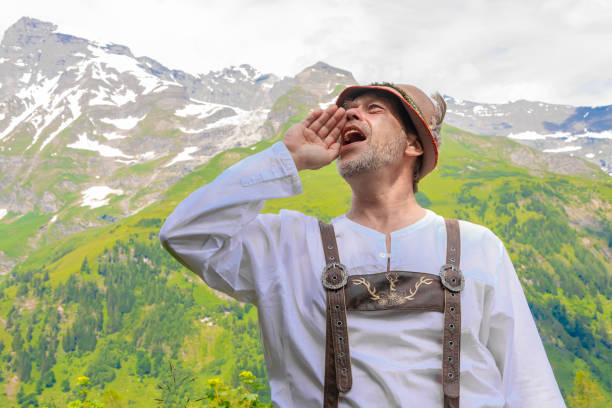
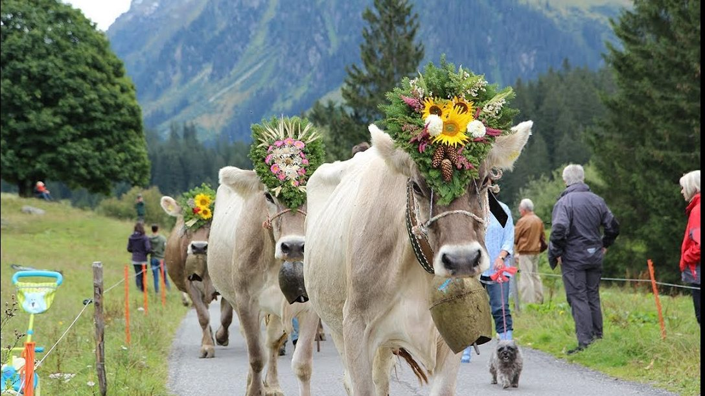

|
 Sajtfondü |
 Raclette |
Rösti |
A sajtfondü és a raclette a legnépszerűbb svájci sajtos fogások, amelyeket hagyományosan megolvasztva, kenyérrel, főtt burgonyával és savanyúsággal fogyasztanak a hideg téli hónapokban. A reszelt burgonyából készült, serpenyőben aranybarnára sütött rösti eredetileg a német nyelvű kantonok paraszti reggelije volt, ám mára az egész ország közkedvelt nemzeti ételévé vált.
|
 Alpesi hagyományok |
 Svájci zene |
 Hagyományos ünnepek |
A svájci kultúrában fontos szerepet töltenek be a hagyományos ünnepek és népszokások. Az alpesi területeken például hagyományos állathajtásokat, zenei rendezvényeket és népi fesztiválokat is tartanak.
A svájci népzene egyik jellegzetes hangszere az alpesi kürt , amelyet régen a hegyvidéki területeken kommunikációra is használtak. Kiemelkedő motívum a jódlizás , amely a mellhang és a fejhang gyors váltakozásán alapul.
A svájci hagyományok között megtalálhatóak a népviseletek, a hagyományos táncok és az alpesi gazdálkodáshoz kapcsolódó szokások is.
| Hagyomány | Jellemzője |
|---|---|
| Alpesi kürt | Hosszú, fából készült hangszer |
| Népviselet | Hagyományos svájci ruházat(Tracht) |
| Jódli | Jellegzetes alpesi énektechnika |
| Alpesi fesztiválok | Appenzelli tehénkiállítások és vonulások, Sajtosztó ünnepek |